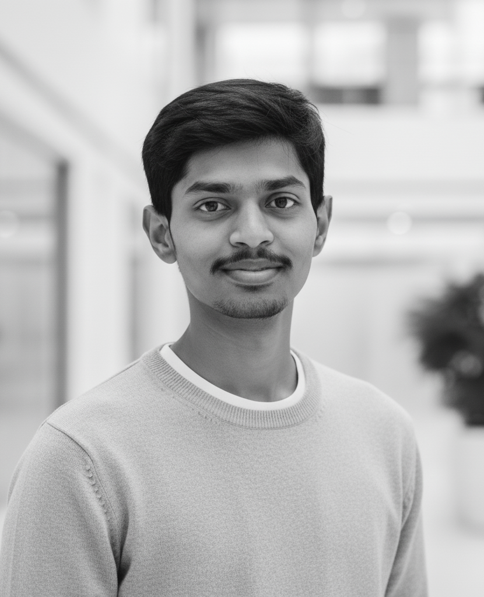

About Me
B.Tech graduate in Computer Science and Engineering (Artificial Intelligence and Machine Learning) from Dayananda Sagar University. Experienced in Flutter-based mobile app development, with hands-on work in AI, machine learning, and data analysis. Completed projects that highlight my technical skills, teamwork, and the ability to find effective solutions. Interested in contributing to a team and driving impactful results.
Education
-
B.Tech in Computer Science Engineering (AI & ML) — Completed
Dayananda Sagar University | 2021 - 2025
CGPA: 7.59
-
PUC (PCMB)
Banajawad PU College | 2019 - 2021
Percentage: 80%